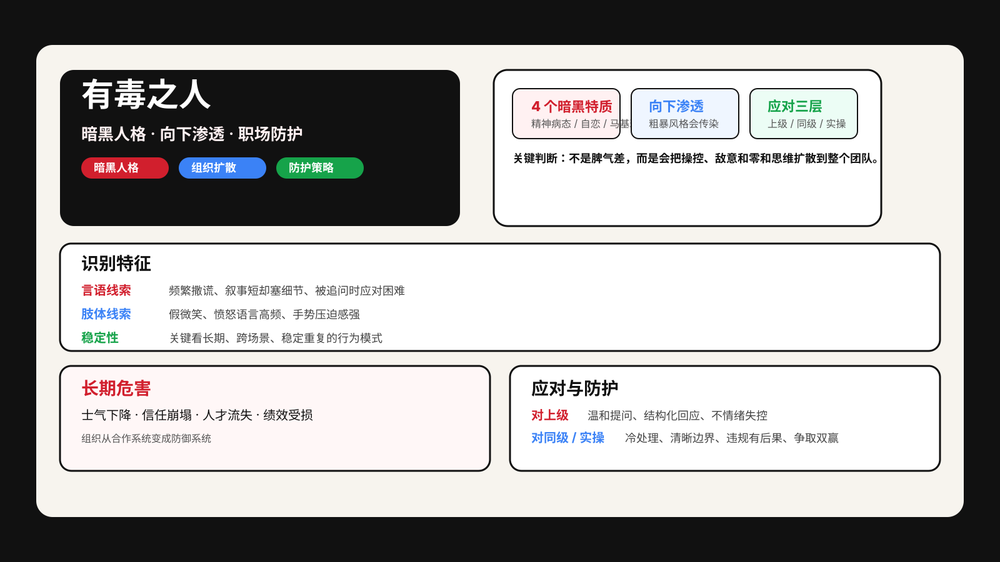

持续冷漠、操控、敌意强，常伴随精神病态、自恋、马基雅维利主义和施虐倾向等暗黑特质。
领导者的粗暴行为或零和思维会传染到中层和下属，合作环境会被改造成恶性竞争环境。
自信爆棚、讲话强势、叙事完整，容易被误认为能力卓越。
在面试、汇报和权力场景中制造“我很强”的印象。
表面能推动事情，但真实代价会在后期以流失、内耗和损失形式出现。
频繁撒谎；叙事很短但细节很多；被追问时容易露出不一致。
假微笑多、愤怒语言高频、表达时手势压迫感强。
关键不是一次失态，而是跨场景、长期出现相同模式。
总把问题推给别人、总在制造对抗、总让周围人不敢说真话。
| 危害 | 表现 | 结果 |
|---|---|---|
| 士气下降 | 员工变得防御、谨慎、失去主动性 | 团队效率下滑 |
| 信任崩塌 | 人人先自保、再甩锅、再内斗 | 合作系统失效 |
| 人才流失 | 高质量成员不愿长期停留 | 组织失血 |
| 经济损失 | 项目变形、投资业绩与绩效长期受损 | 隐性成本高 |
不情绪失控；洞察其表演本质；用温和提问和结构化回应逼近真实目标。
冷处理，不给对方制造心理伤害和操控空间。
边界清晰、违规有后果、争取双赢、盯住其核心利益诉求。
不要只看一次情绪爆发，要看是否长期持续操控、撒谎、甩锅、制造敌意。
如果他所在的团队越来越不敢说真话，往往说明“向下渗透”已经发生。